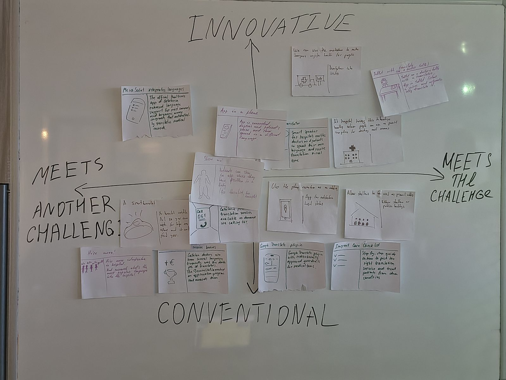
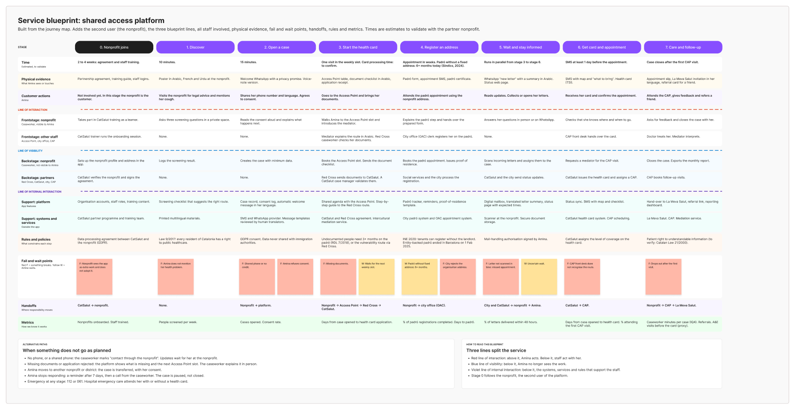
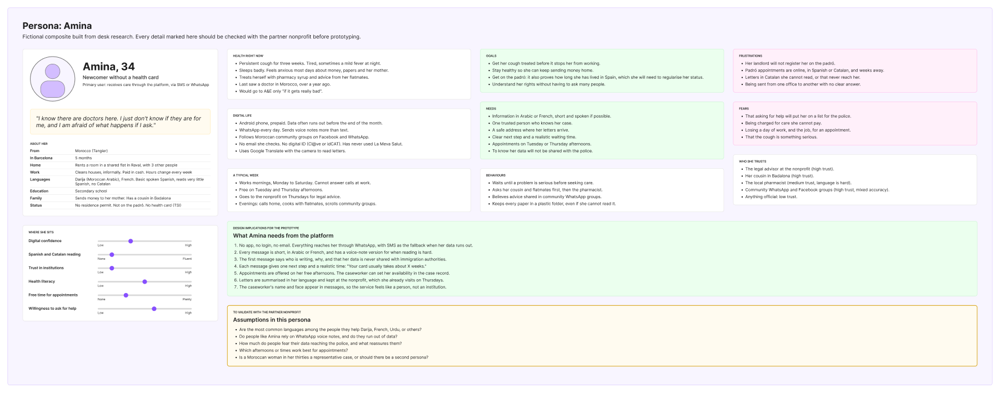
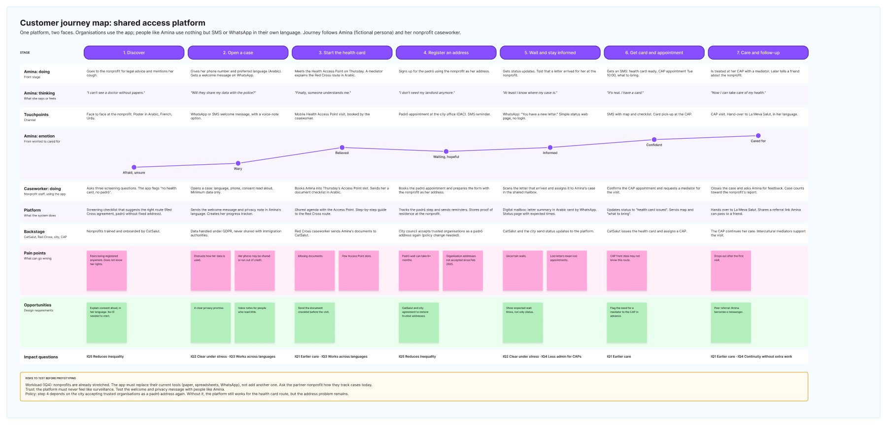
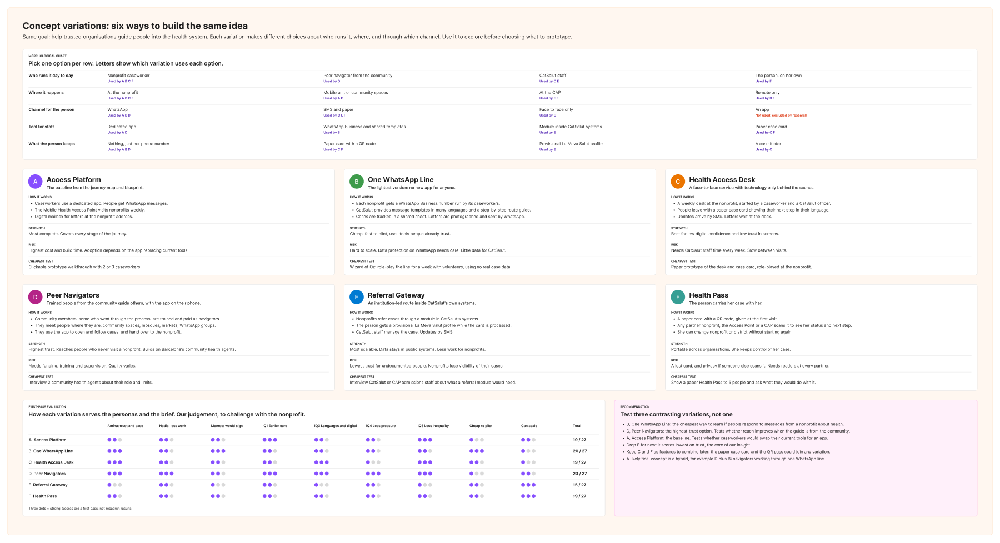
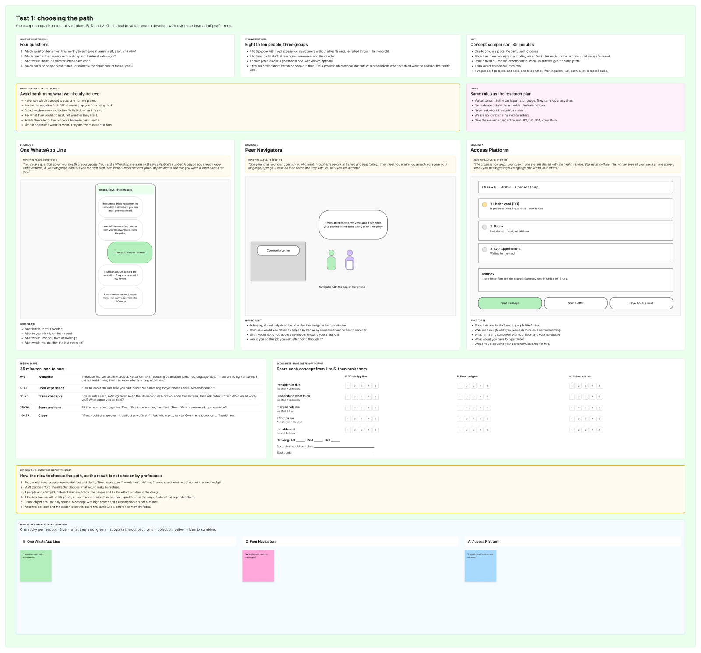

Amina has had a cough for three weeks. She lives twenty minutes from one of the best public health systems in Europe and has not seen a doctor, because every door into it starts with an address she cannot register. A service design concept for CatSalut that opens that door through the organisations she already trusts.
Amina is a fictional persona built from the research. Photo: Achraf Talha, Unsplash.
This was Design Challenge 03 of a three-week Design Thinking course at Harbour.Space University in Barcelona, taken through the full double diamond with CatSalut, the Catalan public health service, as the client in the brief. It is a course project: CatSalut set no requirements and saw no presentation.
The brief asked how to help everyone in Barcelona recognise when they need help, understand where to go, and receive the right care before a manageable problem becomes a crisis. Read that way, it is a wayfinding problem: pharmacy or CAP, the 061 line or A&E. My first vision, written in week one before any fieldwork, was exactly that — a guide that helps people understand the process.
The research took that vision apart. Barcelona is not short of information about where to go. The people who end up in the wrong place are mostly not confused about the options; they are locked out of all but two of them.
Discover · The official map
Pharmacy
Primary care
Advice, 24/7
Urgent care
Hospital
Emergency
Free at the point of care, open around the clock, answered in ninety languages on the phone line. On paper, the system is not the problem.
The research started with a research plan built around six questions from the brief, and then a service safari: I walked into a primary care centre (CAP) and followed the path a newcomer would, from the door to the first request for a health card.
What I found was a well-run centre. The information desk faces the entrance, the ticket keeps the queue orderly, and the receptionist is well prepared. The path fails at step five, and it fails the same way every time: to get a health card you need the padró, the municipal register of where you live, and to be on the padró you need an address someone will let you register.
Discover · Service safari at a CAP
The information desk faces the entrance and the ticket keeps the queue clear.
Everything is in Catalan. Staff switch to Spanish if asked; the signs never do.
Well prepared, full of information, and one receptionist doing it all. You only reach it if you speak the language and know to ask.
Discover · The turn
The pharmacy counter and emergency care. Everything in between starts with an address, and Amina’s landlord will not register her at the flat where she actually lives.
The insight wall came from the workshop, desk research and the safari, and each note went through the same template: what I saw or heard, and why that was the case. Written that way, five separate observations turned out to have the same cause.
People are not waiting too long because they misjudge their symptoms. They wait because A&E is the only door that never asks for a card, so it becomes the door they use — late, and at the highest cost to the system.
Define · Insights
People wait until symptoms are severe, then go to A&E.
BecauseA&E is the only door that does not ask for a health card.
Only 88 cards in six months through the legal route.
BecauseInstitutions know the routes. The people who need them do not.
Caseworkers repeat the same explanation and track letters in a notebook.
BecauseThere is no shared system, so the knowledge lives in individuals.
Health information comes in ten languages. The padró in none.
BecauseInstitutions translate their own service, not the path into it.
People fear that registering anywhere will reach the police.
BecauseNothing in the process tells them what happens to their data.
The system works once you are inside. Getting in is the hard part.
I wrote three How Might We questions straight after the insights, and judged them on one thing: does the question accept the wall, or take it down?
Helping CatSalut identify vulnerable people fixes the institution's blind spot, but being identified is exactly what people fear. Reaching people without an address keeps the person at the centre, but works around the wall instead of removing it. The first question was the only one that went at the cause — and it held up, because the law already allows it.
Define · How might we
The law already lets an organisation lend its address. The problem was never the document; it is who holds it.
Fixes the blind spot, but being identified is exactly what people fear.
Keeps the person at the centre, but works around the wall instead of removing it.
The address is the lock. An organisation can hold the key.
Ideation ran as a Rapid 8 — eight ideas in eight minutes, volume over quality — and then onto a wall matrix: innovative or conventional, and whether each idea met our challenge or another one.
The matrix was humbling. Eleven of fifteen ideas fixed translation inside the doctor's office, a problem I had already ruled out in the insights. Only four went at getting into the system, and the strongest of those was not new at all: nonprofits holding an address for the people they support. It had been happening quietly in Barcelona for years.
Design · Ideas
Let the nonprofits people already trust hold the registered address again, so the padró stops being a wall.

The matrix as it was built in the workshop, 16 September 2026, before being redrawn above.
Before building on "organisations as an address" I checked whether it was legal. It is. An INE resolution of 17 February 2020 lets a person with no housing be registered at the address of a social service, if that service reports she lives in the city and agrees to pass on her post. There is one condition, and the whole concept turns on it: the service must be public, or coordinated and supervised by a public body.
Barcelona used that route more widely than any other city in the metropolitan area — until 1 February 2025, when it closed the version run through social organisations. About 1,500 people lost their registration.
So the proposal is not an invention. It asks CatSalut and the city to bring those organisations back under public supervision, and gives them the service to do it well.
Define · The legal ground
Define · The discovery that changed the project
health cards issued in six months through the route built for exactly her situation.
Emergency care, meanwhile, is guaranteed to everyone by law. It is the only door that never asks, so it is the door people end up using.
A card without a padró, through CatSalut and the Red Cross. Registration without the landlord. Registration with no fixed address.
Guides in ten languages, a helpline in ninety. None of it covers the paperwork that opens the door.
The vision after research reads differently from the week-one version: a shared access service that opens the door to primary care before a crisis, for people in Barcelona who cannot register an address, through the organisations they already trust.
I explored six concept variations on a morphological chart — who holds the case, which channel, where the address lives — and dot-voted them down to three, which became one concept. It has three parts, one for each person in the service: a protocol for the nonprofit team, a case tool for the caseworker, and a message thread for Amina. Nothing for her to install, nothing to log into, and a clear promise about her data in the first message she receives.
The MVP is deliberately small: train one team, give them one number, run it for eight weeks.
Deliver · The concept
A protocol card and one training session: the three questions to ask, what to say about her data, and which route fits her case.
One case, three steps: card, padró, appointment. It replaces the spreadsheet and the notebook.
WhatsApp or SMS in her language, from someone she knows. No app, no login. Her letters reach her as a voice note.
Proposed partners for the pilot · none approached
Deliver · What we prototype
When someone arrives without papers
This was the first time I designed something that was not a product, and the service blueprint is where that became concrete. Above the line of visibility there is almost nothing: one caseworker, one thread, in her language. Below it sit the Red Cross route for the card, the city's padró office, CatSalut, the CAP and the training that makes the nonprofit ready.
The blueprint also showed where the service would break: a CAP front desk that has never heard of the route, an address rejected by the padró office, and a padró wait that can run past six months. Those are the points the pilot has to watch first.
Deliver · Service blueprint

The full blueprint, stages 0 to 7, with fail (F) and wait (W) points. Click to enlarge.
A service asked of a public health system has to argue in the system's own terms. An A&E visit costs three to five times a primary care visit, before counting the later, sicker episode that arriving late tends to bring.
The pilot's arithmetic is modest on purpose: one nonprofit, ten people guided, ten card applications where today there are none, six people who see a GP before an emergency room. At public price lists, those six visits alone are €630–1,236 saved in eight weeks — and Barcelona has more than a hundred organisations that could do the same.
These figures are illustrative. The prices come from other Spanish regions' public price lists; the Catalan tariff was still to be sourced from CatSalut.
Deliver · CX metrics & ROI
What we measure
Cases redirected from A&E to primary care
Days from first contact to health card
Problems treated at first stage, not as emergencies
Caseworker minutes per case
Reply rate, and drop-off after first contact
Deliver · Impact framework
organisation, one number, one contact
people walked through routes that already exist
health-card applications in eight weeks, where today there are none
of them see a GP before an emergency room
crises, and bills, that never happen
The fastest way into Barcelona’s health system is not a new front door.
It is the people who already hold the keys.
The boards above are rebuilt from the course canvases. These are four of the originals: the persona and journey map that put Amina and her caseworker side by side, the six concept variations and how they were scored, and the test kit for checking the riskiest assumption first — that people will answer a health message from a nonprofit they already know.

Persona · Amina

Customer journey map

Concept variations

Test kit
This is a three-week course project. CatSalut was the client in the brief, not a commission; none of the partners named above were approached; the pilot never ran, and the cost figures come from other regions' price lists. What it does have is a problem traced to its cause, a legal route that already exists, and a pilot small enough to run next month.
Not settling for the first idea. The week-one vision was a reasonable answer to the brief as written, and it would have produced a well-made guide to a door most of the people in trouble cannot open. Every step after that — the safari, the insight template, the matrix — kept adding inputs until the obvious answer stopped holding up.
Talk to the people it is about. Amina, Nadia and Montse are personas built from desk research, a workshop and one CAP visit. The riskiest assumption — that someone without papers will trust a message about her data — can only be tested with them, and the test kit was written so that the first week of the pilot does exactly that.
In Refugios Temporales it was a civil protection manual that specified everything except how to lay out the room. Here it is a health system where every right Amina needs is already written down — a card without a padró, registration without a landlord, emergency care for everyone — and no one owns the path between them.
The job is the same one: the expertise exists, and the form it is stored in keeps it from the person who needs it under pressure. What was new for me was designing the answer as a service rather than an object — deciding who holds the case, what crosses the line of visibility, and how one conversation becomes a health card.